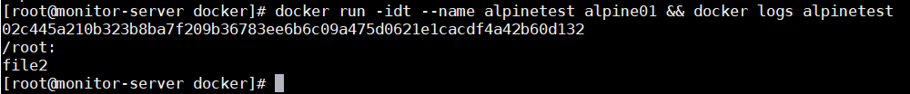
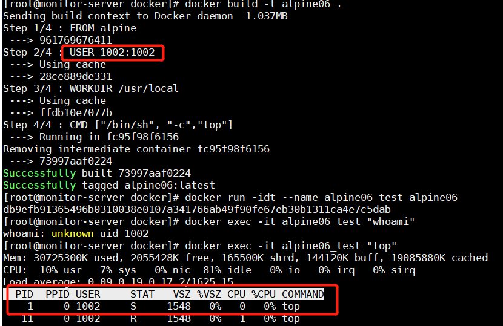

Table of Contents generated with DocToc
- 定义转义符
- 环境变量
- 忽略文件
- FROM
- RUN
- CMD
- RUN vs CMD
- LABEL
- MAINTAINER
- EXPOSE
- ENV
- ADD
- COPY
- COPY VS ADD
- ENTRYPOINT
shell formvsexec form- USER
- WORKDIR
- VOLUME
- SHELL
- HEALTHCHECK
- STOPSIGNAL
- ONBUILD
定义转义符
适用于windows平台
# escape=`
FROM microsoft/nanoserver
COPY testfile.txt c:\
RUN dir c:\
环境变量
FROM busybox
ENV foo /bar
WORKDIR ${foo} # WORKDIR /bar
ADD . $foo # ADD . /bar
COPY \$foo /quux # COPY $foo /quux
${variable_name}支持bash一些标准：
- ${variable:-word} variable为空则取word的值
- ${variable:+word} variable非空则取word的值
支持环境变量得到docker指令如下：
- ADD
- COPY
- ENV
- EXPOSE
- FROM
- LABEL
- STOPSIGNAL
- USER
- VOLUME
- WORKDIR
忽略文件
当执行构建build时docker-cli会先在指定的上下文目录中，寻找.dockerignore文件，docker-cli根据文件内容，排除context的路基目录或文件，随后再将信息发送给docker-daemon
例子如下：
# comment
*/temp*
*/*/temp*
temp?

不忽略的话，会全部提交过去，如果当前上下文目录下文件较多/大，会影响镜像的build速度

FROM
FROM可以在一个Dockerfile出现多次
ARG与FROM交互
ARG CODE_VERSION=latest
FROM base:${CODE_VERSION}
CMD /code/run-app
FROM extras:${CODE_VERSION}
CMD /code/run-extras
ARG生命周期
在FROM之前声明的ARG位于构建阶段之外，因此不能在FROM之后的任何指令中使用它。若要使用第一个FROM之前声明的ARG的默认值，请使用构建阶段中没有值的ARG指令
ARG VERSION=latest
FROM busybox:$VERSION
ARG VERSION
RUN echo $VERSION > image_version
RUN
格式一：
RUN <command> (shell form, the command is run in a shell, which by default is /bin/sh -c on Linux or cmd /S /C on Windows)
格式二：
RUN ["executable", "param1", "param2"]
/bin/sh替换为/bin/bash
RUN ["/bin/bash", "-c", "echo hello"]
docker-deamon执行与shell执行
shell执行并返回结果
Step 1/2 : FROM alpine
---> 961769676411
Step 2/2 : RUN [ "sh", "-c", "cat ~/.bash_profile" ]
---> Running in f6a08aee1953
cat: can't open '/root/.bash_profile': No such file or directory
The command 'sh -c cat ~/.bash_profile' returned a non-zero code: 1
docker-deamon执行并返回结果
Step 1/2 : FROM alpine
---> 961769676411
Step 2/2 : RUN [ "cat ~/.bash_profile" ]
---> Running in 59d4ac8f5ff7
OCI runtime create failed: container_linux.go:345: starting container process caused "exec: \"cat ~/.bash_profile\": stat cat ~/.bash_profile: no such file or directory": unknown
CMD
格式一：
CMD ["executable","param1","param2"] (exec form, this is the preferred form)
格式二：
CMD ["param1","param2"] (as default parameters to ENTRYPOINT)
格式三：
CMD command param1 param2 (shell form)
CMD只能出现一次，最后的CMD指令会覆盖之前的指令
解析规则
默认解析为shell指令
FROM ubuntu
CMD echo "This is a test." | wc -
实际解析为
FROM ubuntu
CMD /bin/sh -c echo "This is a test." | wc -
以下格式必须使绝对径，并且命令用 ""引用
FROM ubuntu
CMD ["/usr/bin/wc","--help"]
RUN vs CMD
RUN 生效于镜像build时
Step 1/2 : FROM alpine
---> 961769676411
Step 2/2 : RUN cat ~/.bash_profile
---> Running in 446a0b3c52ce
cat: can't open '/root/.bash_profile': No such file or directory
The command '/bin/sh -c cat ~/.bash_profile' returned a non-zero code: 1
CMD生效于镜像启动为容器时
Step 1/2 : FROM alpine
---> 961769676411
Step 2/2 : CMD cat ~/.bash_profile
---> Running in 8b4e2c4c810f
Removing intermediate container 8b4e2c4c810f
---> 92382df2a644
Successfully built 92382df2a644
Successfully tagged alpine01:latest
docker run -idt alpine01
返回容器ID 4542bb3760f4036c8044be744fbf5c948045bbfe4216aa7ae719e596a41dd859
docker logs -f 4542bb3760f4036c8044be744fbf5c948045bbfe4216aa7ae719e596a41dd859
cat: can't open '/root/.bash_profile': No such file or directory
LABEL
格式：
LABEL <key>=<value> <key>=<value> <key>=<value> ...
样例：
LABEL "com.example.vendor"="ACME Incorporated"
LABEL com.example.label-with-value="foo"
LABEL version="1.0"
LABEL description="This text illustrates \
that label-values can span multiple lines."
声明为一行：
LABEL multi.label1="value1" multi.label2="value2" other="value3"
LABEL multi.label1="value1" \
multi.label2="value2" \
other="value3"
MAINTAINER
最新版已被移除，可以使用Label指令代替
LABEL maintainer="SvenDowideit@home.org.au"
EXPOSE
仅作说明用途，不会实际开放端口
ENV
格式一：
ENV <key> <value>
格式二：
ENV <key>=<value> ...
ADD
格式一：
ADD [--chown=<user>:<group>] <src>... <dest>
格式二：
ADD [--chown=<user>:<group>] ["<src>",... "<dest>"]
支持通配符：
ADD hom* /mydir/ # adds all files starting with "hom"
ADD hom?.txt /mydir/ # ? is replaced with any single character, e.g., "home.txt"
The <dest> is an absolute path, or a path relative to WORKDIR, into which the source will be copied inside the destination container
转义特殊字符：
ADD arr[[]0].txt /mydir/ # copy a file named "arr[0].txt" to /mydir/
指定文件所属及权限：
ADD --chown=55:mygroup files* /somedir/
ADD --chown=bin files* /somedir/
ADD --chown=1 files* /somedir/
ADD --chown=10:11 files* /somedir/
If the container root filesystem does not contain either /etc/passwd or /etc/group files and either user or group names are used in the --chown flag, the build will fail on the ADD operation. Using numeric IDs requires no lookup and will not depend on container root filesystem content.
ADD规则：
<src>必须位于build 上下文路径中，不可以使用相对路径（如ADD ../something /something）<dest>尽量以"/"结尾（ADD http://192.168.1.2:80/file1 /root/file2,会解析为将file1下载到/root下并命名为file2）


- 当
<src>为目录时，则复制目录下的全部内容，包括文件系统元数据但不包含该目录

<src>为可识别的压缩类型文件时（identity, gzip, bzip2 or xz，与文件名无关），会自动被解压


- If
<dest>doesn’t exist, it is created along with all missing directories in its path.
COPY
格式一：
COPY [--chown=<user>:<group>] <src>... <dest>
格式二：
COPY [--chown=<user>:<group>] ["<src>",... "<dest>"]
COPY VS ADD
COPY不会自动解压缩
COPY支持<src>为URL类型
ENTRYPOINT
格式一：
ENTRYPOINT ["executable", "param1", "param2"]
格式二：
ENTRYPOINT command param1 param2
shell form vs exec form
两者的区别如下：
shell form本质为交由shell执行（默认/bin/sh）
exec form本质为交由docker-daemon执行

USER
指定镜像启动后的容器内程序所属用户,默认root启动
USER <user>[:<group>] or
USER <UID>[:<GID>]

WORKDIR
指定构建阶段的目录上下文
VOLUME
映射docker宿主机与容器目录
SHELL
多用于windows平台
The SHELL instruction allows the default shell used for the shell form of commands to be overridden.
The default shell on Linux is ["/bin/sh", "-c"], and on Windows is ["cmd", "/S", "/C"]. The SHELL instruction must be written in JSON form in a Dockerfile.
HEALTHCHECK
健康检测端点，判断容器内服务状态：
HEALTHCHECK --interval=5m --timeout=3s \
CMD curl -f http://localhost/ || exit 1
可选配置：
// 每30s检测一次
--interval=DURATION (default: 30s)
// 超时响应时间（超过30s未响应，代表不健康）
--timeout=DURATION (default: 30s)
// 容器启动多久后开启检测(取决于容器启动速度)
--start-period=DURATION (default: 0s)
// 重试次数
--retries=N (default: 3)
退出码：
0: success - the container is healthy and ready for use
1: unhealthy - the container is not working correctly
STOPSIGNAL
退出信号，默认SIGTERM（强制退出）
STOPSIGNAL 9
可修改该值实现程序的平滑退出，值可以为信号名也可以为数字
ONBUILD
相当于触发器，下次该镜像作为基础镜像时被触发
The ONBUILD instruction adds to the image a trigger instruction to be executed at a later time,
when the image is used as the base for another build.
ONBUILD [INSTRUCTION]
ONBUILD不可触发的指令如下：
FROM
ONBUILD
MAINTAINER
docker build image
Dockerfile指令
创建目录
mkdir -p /docker/simple
创建dockerfile
FROM alpine
# 设置变量
ENV NGINX_VERSION 1.16.1
# 修改源
RUN echo "http://mirrors.aliyun.com/alpine/latest-stable/main/" > /etc/apk/repositories && \
echo "http://mirrors.aliyun.com/alpine/latest-stable/community/" >> /etc/apk/repositories && \
# 安装需要的软件
apk update && \
apk add --no-cache ca-certificates && \
apk add --no-cache curl bash tree tzdata && \
cp -rf /usr/share/zoneinfo/Asia/Shanghai /etc/localtime && \
# 编译安装nginx
GPG_KEYS=B0F4253373F8F6F510D42178520A9993A1C052F8 \
&& CONFIG="\
--prefix=/opt/nginx \
--sbin-path=/usr/sbin/nginx \
--modules-path=/usr/lib/nginx/modules \
--conf-path=/opt/nginx/conf/nginx.conf \
--error-log-path=/var/log/nginx/error.log \
--http-log-path=/var/log/nginx/access.log \
--pid-path=/var/run/nginx.pid \
--lock-path=/var/run/nginx.lock \
--http-client-body-temp-path=/var/cache/nginx/client_temp \
--http-proxy-temp-path=/var/cache/nginx/proxy_temp \
--http-fastcgi-temp-path=/var/cache/nginx/fastcgi_temp \
--http-uwsgi-temp-path=/var/cache/nginx/uwsgi_temp \
--http-scgi-temp-path=/var/cache/nginx/scgi_temp \
--user=nginx \
--group=nginx \
--with-http_ssl_module \
--with-http_realip_module \
--with-http_addition_module \
--with-http_sub_module \
--with-http_gunzip_module \
--with-http_gzip_static_module \
--with-http_random_index_module \
--with-http_secure_link_module \
--with-http_stub_status_module \
--with-http_auth_request_module \
--with-http_xslt_module=dynamic \
--with-http_image_filter_module=dynamic \
--with-http_geoip_module=dynamic \
--with-stream \
--with-stream_ssl_module \
--with-stream_ssl_preread_module \
--with-stream_realip_module \
" \
&& addgroup -S nginx \
&& adduser -D -S -h /var/cache/nginx -s /sbin/nologin -G nginx nginx \
&& apk add --no-cache --virtual .build-deps \
gcc \
libc-dev \
make \
openssl-dev \
pcre-dev \
zlib-dev \
linux-headers \
curl \
gnupg \
libxslt-dev \
gd-dev \
geoip-dev \
&& curl -fSL http://nginx.org/download/nginx-$NGINX_VERSION.tar.gz -o nginx.tar.gz \
&& mkdir -p /usr/src \
&& tar -zxC /usr/src -f nginx.tar.gz \
&& rm nginx.tar.gz \
&& cd /usr/src/nginx-$NGINX_VERSION \
&& ./configure $CONFIG --with-debug \
&& make -j$(getconf _NPROCESSORS_ONLN) \
&& mv objs/nginx objs/nginx-debug \
&& mv objs/ngx_http_xslt_filter_module.so objs/ngx_http_xslt_filter_module-debug.so \
&& mv objs/ngx_http_image_filter_module.so objs/ngx_http_image_filter_module-debug.so \
&& ./configure $CONFIG \
&& make -j$(getconf _NPROCESSORS_ONLN) \
&& make install \
&& rm -rf /opt/nginx/html/ \
&& mkdir /opt/nginx/conf/conf.d/ \
&& mkdir -p /usr/share/nginx/html/ \
&& install -m644 html/index.html /usr/share/nginx/html/ \
&& install -m644 html/50x.html /usr/share/nginx/html/ \
&& install -m755 objs/nginx-debug /usr/sbin/nginx-debug \
&& install -m755 objs/ngx_http_xslt_filter_module-debug.so /usr/lib/nginx/modules/ngx_http_xslt_filter_module-debug.so \
&& install -m755 objs/ngx_http_image_filter_module-debug.so /usr/lib/nginx/modules/ngx_http_image_filter_module-debug.so \
&& ln -s ../../usr/lib/nginx/modules /opt/nginx/modules \
&& strip /usr/sbin/nginx* \
&& strip /usr/lib/nginx/modules/*.so \
&& rm -rf /usr/src/nginx-$NGINX_VERSION \
\
# Bring in gettext so we can get `envsubst`, then throw
# the rest away. To do this, we need to install `gettext`
# then move `envsubst` out of the way so `gettext` can
# be deleted completely, then move `envsubst` back.
&& apk add --no-cache --virtual .gettext gettext \
&& mv /usr/bin/envsubst /tmp/ \
\
&& runDeps="$( \
scanelf --needed --nobanner /usr/sbin/nginx /usr/lib/nginx/modules/*.so /tmp/envsubst \
| awk '{ gsub(/,/, "\nso:", $2); print "so:" $2 }' \
| sort -u \
| xargs -r apk info --installed \
| sort -u \
)" \
&& apk add --no-cache --virtual .nginx-rundeps $runDeps \
&& apk del .build-deps \
&& apk del .gettext \
&& mv /tmp/envsubst /usr/local/bin/ \
\
# forward request and error logs to docker log collector
&& ln -sf /dev/stdout /var/log/nginx/access.log \
&& ln -sf /dev/stderr /var/log/nginx/error.log
# 开放80端口
EXPOSE 80
STOPSIGNAL SIGTERM
# 启动nginx命令
CMD ["nginx", "-g", "daemon off;"]
构建镜像
docker build -t nginx:1.16.1 .
11/16/2019 1:55:59 PM
批量导出
docker images |awk '{print $1}' |sed -n '2,$p' |xargs docker save -o k8s.tar
docker multi-stage
创建目录
mkdir -p /docker/multi-stage
创建golang程序
cat > /docker/multi-stage/rancher.go <<EOF
package main
import (
"time"
)
func main() {
for {
println(time.Now().Format("2006-01-02 15:04:05.999999999 -0700 MST"))
time.Sleep(time.Second)
}
}
EOF
创建dockerfile
cat > /docker/multi-stage/Dockerfile <<EOF
FROM golang
WORKDIR /go/src/github.com/alexellis/href-counter/
ADD rancher.go .
RUN CGO_ENABLED=0 GOOS=linux go build -a -installsuffix cgo -o rancher .
FROM alpine
RUN apk --no-cache add ca-certificates
WORKDIR /root/
COPY --from=0 /go/src/github.com/alexellis/href-counter/rancher .
ENTRYPOINT ["./rancher"]
EOF
构建镜像
docker build -t rancher-demo .
构建信息

镜像大小

运行容器
docker run --rm --name rancher -idt rancher-demo
查看日志
docker logs -f rancher

11/16/2019 1:19:36 PM